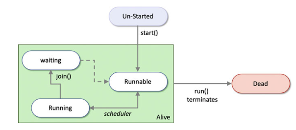

How many snakes do you need? - An introduction to concurrency and parallelism in Python
Performance matters¶
At some point, every Python developer wonders if it’s their program that is slow, or Python that is slow. In most cases, it is their program itself. Although Python gets a bad rap for being slower than compiled languages like C, C++, developers can utilize concurrency and parallelism to see significant gains.
So, what’s the difference between concurrency and parallelism?
- Concurrency is the virtue of tasks not holding up one another and letting the program to progress. Think of blocking vs non-blocking.
- Parallelism is the practice of breaking a large task into smaller subtasks that can run in parallel, at the same time.
Both concurrency and parallelism share implementation aspects. Concurrency is more about how a program is structured vs parallelism is doing things in parallel. Thus, concurrency is not inherently parallel, but doing things at the same time (by switching context from one thread to another). In general, UI design cares more about concurrency where as big data and scientific data processing cares more about parallelism.
It is also relevant to discuss another paradigm in computing called asynchronous (vs synchronous) processing. A program is set to be asynchronous, if does not expect the caller to wait until it finishes execution. Programs accomplish this by providing a jobid for each task which the caller can poll at intervals to know if the task finished or not. Thus, the caller can submit a job to the async program, proceed to do other stuff and then use the result when it really needs it. Thus, even though a calling program may not implement parallelism, it can now run tasks concurrently by using async programming model.
Another way to differentiate concurrency from parallelism is to simply say, parallelism involves threads in different processors, which allows them to execute at the same time, whereas concurrency is multiple threads on the same process, which although are non-blocking, they do not strictly execute all at the same time. However, these threads still individually make progress since the process will cycle through them.
Threads vs Processes¶
A process is an instance of your program that is being executed. It has 3 elements - the code, the data (variables) used by the code and the state of the process (execution context). Each process has its own address space and don’t typically talk to each other.
Each process can have one or more threads. Threads are lightweight as they share the address space with other threads within the same process and is not treated as a separate entity by the host OS.
Typically, operating systems cycle through threads in a round-robin fashion. The thread that gets to execute is called the main thread. But how long will it be the main thread? In Python, a thread will execute until
- it is finished
- until it is waiting for some IO
- starts a sleep
- has been running for
15ms
after which, the OS will switch to another in its queue before returning back to it.
Threading¶
A thread in Python can be created using the Thread class from the threading module. A thread can be in one of 3 states.
Thread states¶
When a thread is created, it just exists, remains in an un-started state. Once you call the start() method, it goes to one of 3 states
- Runnable - a state where the processor can execute it
- Running - currently being the
activethread - Waiting - where it is blocked by another process or thread. The
join()method allows you to represent this dependency.
The scheduler moves the thread through these states. The thread remains alive until its run() method terminates, upon which, it becomes dead. The graphic below (from Hunt J. (2019)) explains these states quite well.

Instantiating the Thread class¶
The constructor for Thread looks like below
class threading.Thread(group=None, target=None, name=None, args=(), kwargs={}, daemon=None)
group is reserved, primarily to be used when ThreadGroup class is implemented. target accepts a callable object (like a method). The run() method of the Thread object will call that that object. name is the name of the thread and by convention takes the form Thread-N where N is a number. args collects the arguments to pass to the callable object and kwargs does the same but with named arguments.
So, a simple example could be:
from threading import Thread def simple_worker(greet='hello'): print(greet) t1 = Thread(target=simple_worker) print(t1.is_alive()) # prints False t1.start() # prints hello print(t1.native_id) # prints the thread ID.
Typically, when you execute in a separate thread, you will notice the kernel’s main becomes free even if the thread you spawned is still running. For example see this:
from time import sleep def worker(): for i in range(0,10): print('.', end='', flush=True) sleep(1) print('Starting') t2 = Thread(target=worker, name='t2') t2.start() print('\nDone')
will print
Starting . Done .......
See Done got printed before all the dots got printed, which means the execution proceeded right along with the next steps. The worker did not block the main thread.
You can make one thread wait for another using the join() method. If you add a t2.join() after t2.start(), it would wait for the worker to finish and then print Done.
Inspecting threads¶
threading.enumerate() will print all the threads that are running:
[<_MainThread(MainThread, started 4515802560)>, <Thread(Thread-2, started daemon 123145471606784)>, <Heartbeat(Thread-3, started daemon 123145488396288)>, <HistorySavingThread(IPythonHistorySavingThread, started 123145506258944)>, <ParentPollerUnix(Thread-1, started daemon 123145523585024)> <Thread(t2, started 123145540374528)>] ## -> my thread
and threading.current_thread() will print the currently active thread:
<_MainThread(MainThread, started 4515802560)>
Multiple threads¶
You can start multiple threads for the same worker function. Each thread will invoke the function once, but will retain its own local heap space as can be seen below:
from time import sleep import random def worker(): mark = ['a','b','c','d','e','f','g'] prefix=random.choice(mark) # will choose a prefix at random for i in range(0,10): print(prefix+str(i), end=" ", flush=True) sleep(1) print('Starting') ta = Thread(target=worker, name='ta') tb = Thread(target=worker, name='tb') tc = Thread(target=worker, name='tc') ta.start() tb.start() tc.start() print('\nDone')
will print
Starting a0 d0e0 Done a1d1e1 a2d2e2 e3d3a3 e4d4a4 e5 d5a5 e6a6d6 a7e7d7 e8d8a8 e9d9a9
In this case, a,d,e are the prefixes each thread chose. As you see in the print, the threads don’t go off in sequence as the prefix arrive mixed in the prints. The same thread never prints in succession, which would mean as soon as the sleep is encountered, the main thread switches to the other threads and so on until each thread has to eventually finish the sleep time.
Establishing dependency¶
The operating system reserves the right to schedule your threads. Thus as a programmer, you do not have the ability to deterministically know when your threads will start and finish. However, in real life, you need certain workers to finish before you can proceed to the next step. You establish this using join() methods off Thread objects. See example below:
""" Two threads cooking soup """ import threading import time class ChefOlivia(threading.Thread): def __init__(self): super().__init__() def run(self): print('Olivia started & waiting for sausage to thaw...') time.sleep(3) print('Olivia is done cutting sausage.') # main thread if __name__ == '__main__': print("Barron started & requesting Olivia's help.") olivia = ChefOlivia() print(' Olivia alive?:', olivia.is_alive()) print('Barron tells Olivia to start.') olivia.start() print(' Olivia alive?:', olivia.is_alive()) print('Barron continues cooking soup.') time.sleep(0.5) print(' Olivia alive?:', olivia.is_alive()) print('Barron patiently waits for Olivia to finish and join...') olivia.join() print(' Olivia alive?:', olivia.is_alive()) print('Barron and Olivia are both done!')
which prints
Barron started & requesting Olivia's help. Olivia alive?: False Barron tells Olivia to start. Olivia started & waiting for sausage to thaw... Olivia alive?: True Barron continues cooking soup. Olivia alive?: True Barron patiently waits for Olivia to finish and join... Olivia is done cutting sausage. Olivia alive?: False
In the example above, Olivia is the worker thread, on which the main thread waits before proceeding to a certain step. The example also shows how to inherit a Thread class. When doing this, you only override two methods - the constructor and run() which the scheduler will call once the thread is in Runnable state.
Daemon threads¶
Normally, when a program spawns child threads, the program needs to wait until the child completes (that is, if you don’t already have a dependency established using a join()). This may not always be ideal and you might want to kill off the child when the main program exits. You can establish this behavior using daemon threads. Daemon threads are created by passing that parameter to the constructor or by setting the daemon property to True. Once started, you cannot change a normal thread to a daemon thread.
In the example below, if you did not set daemon=True, the child thread would run forever causing the program to never terminate.
import threading import time def kitchen_cleaner(): while True: print('Olivia cleaned the kitchen.') time.sleep(1) if __name__ == '__main__': olivia = threading.Thread(target=kitchen_cleaner, daemon=True) olivia.start() print('Barron is cooking...') time.sleep(0.6) print('Barron is cooking...') time.sleep(0.6) print('Barron is done!')
which prints
Olivia cleaned the kitchen. Barron is cooking... Barron is cooking... Olivia cleaned the kitchen. Barron is done!
The daemon thread is quit abruptly when the main thread terminates. Thus you should be careful what kinds of ops are relegated to a daemon thread. Good options are using daemon for heartbeat, garbage collection, license checks etc.
Multiprocessing¶
Multiprocessing is running jobs concurrently on multiple processors or cores. This allows developers to truly use modern compute hardware, allowing tasks to run truly in parallel. This mode of computing is useful in data analytics, image processing, animation and gaming.
Similar to threading, Python provides a multiprocessing module and a Process class. This can be used to run a callable object such as a function in a separate process. Dependency between processes can be expressed using join() methods. Processes created this way are directly managed by the operating system. Processes are much more heavier and take resources to spin up compared to threads. The advantage though is the ability to exploit multiple cores.
Instantiating a Process
¶
Constructing a process looks like below:
class multiprocess.Process(group=None, target=None, name=None, args=(), kwargs={}, daemon=None)
group is reserved as in threading and is to be used along with the threading API. target accepts a callable object, which will be invoked by the run() instance method. name is the process name, args accepts a tuple to pass to the called function and kwargs does the same with named args. daemon represents whether the process needs to be run as a background daemon.
The Process class provides useful methods and properties
-
start()which arranges for therun()to be started in a separate process -
join([timeout in sec])to join the current process with another. Current is blocked until timeout or the blocking process ends. is_alive()-
name- the process’s name. Has no semantics, can be useful for debugging -
daemon- bool flag -
pid- process ID -
exitcode-Noneif process has not terminated or value -
terminate()- to terminate a process -
kill()- same as terminate, slight differences based on OS. -
close()- releases all resources used by the process. RaisesValueErrorif the process is still running.
Using a Pool¶
Since creating processes are expensive, one option is to reuse processes within a given application. The Pool class represents a pool of worker processes and has methods that allow tasks to be offloaded to these worker processes. A Pool can be created as below:
class multiprocessing.pool.Pool(processes=None, initializer=None, initargs=(), maxtasksperchild=None, context=None)
where processes is the number of workers to use. Default is os.cpu_count(). initializer(*initargs) is used to represent the method to call and its arguments. maxtasksperchild is the number of tasks a worker can complete. If None, the worker will live as long as the pool.
Pool.map() pattern¶
An example of using the Pool is shown below:
from multiprocessing import Pool def worker(x): print('In worker with: ',x) sleep(2) return x*x def main(): with Pool(processes=4) as pool: print(pool.map(worker, [0,1,2,3,4,5])) if __name__=='__main__': main() # output In worker with: 1 In worker with: 2 In worker with: 0 In worker with: 3 In worker with: 4 In worker with: 5 [0, 1, 4, 9, 16, 25]
Best practice is to close the Pool object after use, so the with as statement is used in the example above. In the example above, only 4 processes were created, but 6 tasks were given. In this case, excess tasks should wait until running processes finish. The map() function returns an iterable, List in this case. Notice: the output order matches the input order despite things running in parallel.
Pool.imap_unordered() pattern¶
If output order does not matter, then you can use imap_unordered() function instead, which gives you a performance improvement. The above program can be modified as shown below:
def main(): with Pool(processes=4) as pool: for res in pool.imap_unordered(worker, [0,1,2,3,4,5]): print(res) # output: In worker with: 0 In worker with: 1 In worker with: 2 In worker with: 3 In worker with: 4 In worker with: 5 0 9 1 4 16 25
Notice the mismatch between input numbers and their squares.
Pool.apply_asyc() pattern¶
The apply_async() method allows for tasks to be executed asynchronously. This way, the main process can spawn off processes in a pool and continue to progress. The pool will munch the data. Results can be collected through a callback function or by using a blocking get() method.
Example using blocking get() method:
from multiprocessing import Pool def collect_results(result): print('In collect results: ', result) def worker(x): print('In worker: ',x) sleep(2) return x*x def main(): with Pool(processes=2) as pool: # blocking workflow: res = pool.apply_async(worker, [2]) print('Blocking result: ' + res.get(timeout=5)) if __name__ == '__main__': main() # output: In worker: 2 Blocking result: 4
Conclusion¶
This concludes the introduction to concurrency in Python. While this article explains the concepts of threads and processes with examples, it is no way close to explaining how to build a program to use these concepts. That is for another part of this article. In the subsequent parts of the article, we will see the need for locks, barriers, synchronization. We will also look into concurrency patterns such as futures and libraries such as asyncio and review their applications.
References¶
- Hunt J. (2019) Introduction to Concurrency and Parallelism. In: Advanced Guide to Python 3 Programming. Undergraduate Topics in Computer Science. Springer, Cham. https://doi.org/10.1007/978-3-030-25943-3_29